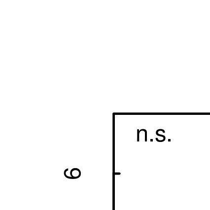
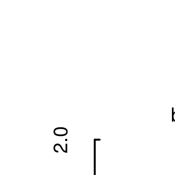
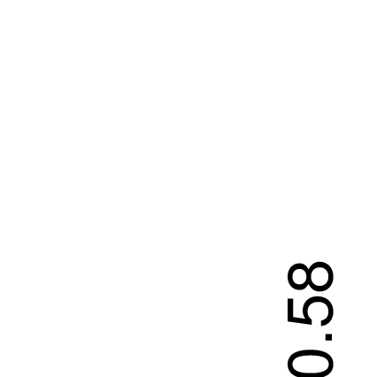
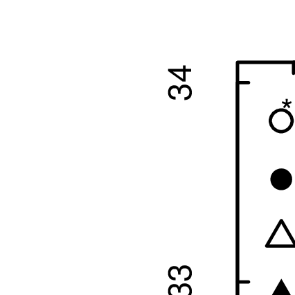
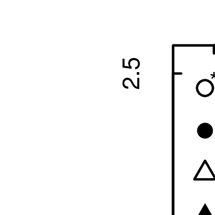
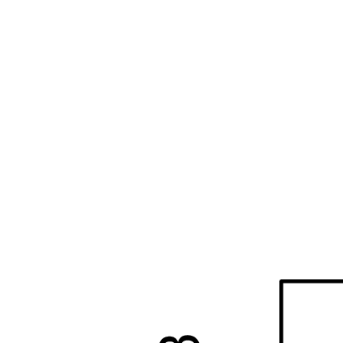
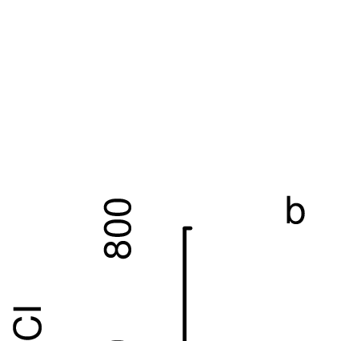

Figure 7: Decomposition dynamics of lipophilic compound classes
Abstract
The degradation of plant polymers in litter decay determines quality and quantity of recalcitrant carbon input to soils. Nevertheless, the involved transformations remain unclear. The properties of lignin during decomposition were questioned recently, the one of hydrophobic compounds were not assesed at all until now. External factors like nutrient availability...
To study decomposition
Keywords: litter decomposition, lignin, analytical pyrolysis, Py-GC/MS_______________________________________________________________________________________________________________________________________________________________________________________________
While for [two decades] the di↑erent compound’s roles in litter deomposition were thought assigned [and ↓xed], recent studies reopen the discussion. Doubt is cast the di↑erences in recalcitrancy attributed to compound classes, which were considered established knowledge a few years ago. (Marschner et al., 2008)
Plant litter biomass is dominated by macromolecular compounds. Together, lignin, carbohydrate and protein polymers make up xx% of litter dry mass, while leach-able substances (\DOC”) in litter account for only xx %. Macromolecular lignin is result of a radical polymerization reaction of enzyme-activated hydroypropylphenol monomers. During polymerization, other compounds, especially carbohydrates and protein, are incorporated into lignin structures (Achyuthan et al., 2010). Conventional litter decomposition models [lit] follow the idea that macromolecules in litter form three independent carbon pools of increasing recalcitrance. These pools are attributed to (1) soluble compounds (most prominently starch), (2) cellulose and hemi-celluloses and (3) lignin. During decomposition, soluble compounds are most accessible for microbes and consumed ↓rst, followed by carbohydrates (i.e. cellulose). Lignin is not degraded until accumulated to a certain, critical level at which the degradation of other compounds is inhibited. This concept was ↓rst described by Berg and Staaf (1980), and stills forms the base of recent models and textbooks [lit!!].
One reason for the popularity of this model is that sizes of the three carbon pools can easily determined by proximate analysis. In these methods, litter cellulose, hemi-celluloses and lignin content are determined by sequential extractions with selective solvents. Especially for lignin determination, these methods (\Klason”-Lignin [lit] and \ADF”-/\Van Soest”-lignin [lit]) were repeatedly criticize as unspeci↓c. When analyzed with alternative methods, extracted lignin fractions contain many other than the proclaimed substances. (for NMR studies see lit., for pyrolysis studies see lit., for CuO studies lit.). However, while not helpful in determining the fate of lignin in litter decomposition, extractive lignin fractions - better labeled \acid insoluble residues” (AUR) - can be used as an indicator for the content of the most recalcitrant carbon compounds in litter (Prescott, 2010). For lipids and plant waxes, neither their accumulation/depletion during decomposition nor the e↑ect of their concentration on decomposition processes is known [!check!,!lit!]
Recent studies using more speci↓c methods (CuO - oxidation, pyr-GC/MS, NMR) to determine litter lignin content cast doubt on it’s role in litter decomposition. Mean residence times for lignin were calculated from both laboratory and outdoor incubation of litter/soil mixtures. Often, lignin residence times found were no longer than other carbon compounds or bulk SOM (Thevenot et al., 2010; Bol et al., 2009). For litter, lignin decomposition rates did not increase from early to late decomposition stages (Klotzbücher et al., 2011). Based on these results, the authors propose a new model for lignin degradation: fastest lignin degradation in litter decay occurs during early litter decomposition; lignin decomposition during late decomposition is limited by (dissolved organic) carbon availability.
Klotzbücher et al. (2011) do not elaborate the e↑ect of macro-nutrient (nitrogen and phosphorous) availability on lignin decomposition. Nitrogen fertilization experiments on litter and soils suggest that litter nitrogen content a↑ects lignin degradation: N addition increases mass loss rates in low-lignin litter while slowing down decomposition in lignin-rich litter (Knorr et al., 2005). High nitrogen levels were reported to inhibit lignolytic enzyme in forest soils(Sinsabaugh, 2010). Cellulose addition lead to a higher mineralization of SOM in fertilized than in unfertilized soils (Fontaine et al., 2011). However, results of arti↓cial fertilization can not be compared to di↑erent \natural” nutrient gradients. To our knowledge, no other experiment has yet compared e↑ects of intra-speci↓c variance in litter nutrient contents on decomposition processes.
Litter nitrogen content is expected to be altered anthopogenically: Elevated N deposition and elevated soil N content both [lit] and possibly by elevated atmospheric CO2 concentrations (Luo et al., 2006; Norby, 1998). Therefore, it will be important to assess the impact of the predicted shifts in litter C:N ratio on decomposition processes and the chemical nature of the resulting organic matter.
While predictions of changes on mass loss rates under modi↓ed C:N ratios are abound, no studies on changes in accumulation/depletion under changing litter chemistry exist.
Several recent studies apply analytical pyrolysis to characterize high molecular weigh carbon. soil organic matter (SOM Vancampenhout et al. (2010)). Only a limited number of pyrolysis studies comparing di↑erent decomposition levels have been done. Most of them study the woody material (Vinciguerra et al., 2007), other studies (lit!) mix plant material with soils and to monitor decomposition processes in this mixture. Franchini et al. (2002). We found only one study
In this study we analyze samples of climate-chamber incubated beech litter varying in N and P content with Pyrolysis-GC/MS (pyr-GC/MS). The experiment was designed to study microbial decomposition, exclude decomposing fauna and keep climatic conditions constant. Extensive data on litter chemistry and and decomposition process rates are available for this samples from previously publications (Mooshammer et al., 2011; Wanek et al., 2011; Leitner et al., 2011) as unpublished data [provided by the MicDiF national research network].
We focus on changes in lignin and carbohydrate content, assuming that
(1) Ligni↓ed biomass and non-ligni↓ed carbohydrates are alternative carbon sources. While free carbohydrates are easier to degrade and the resulting sugar monomers yield more energy, lignin degradation improves to accessibility of nitrogen (\lignin mining”) [lit.]. Microorganisms excrete di↑erent enzymes to degrade those substances. Substrate preference is determined by litter chemistry,
(2) More lignin are decomposed when nitrogen availability is low, hight nitrogen availability inhibits lignin degradations.
(3) Lignin degradation is inhibited when little DOC is available and decomposition is energy limited as proposed by Klotzbücher et al. (2011).
b
A detailed description of our litter decomposition experiment was published in Wanek et al. (2011). Brie'y, beech litter from four sites in Austria (Achenkirch (AK), Klausenleopoldsdorf(KL), Ossiach(OS), and Schottenwald(SW); refered to as litter types) was collected in October 2008. Litter was homogenized, sterilized and innoculated (1.5% w/w) with a mixture of litter and soil. Samples of 60g litter (fresh weight) were kept at 15 °C and 60% water content in mesocosms for a duration between 2 weeks to 15 month. For each litter type 5 replicas were removed and analyzed after 14, 97, 181 and 375 days (refered to as Harvest 1-4, H1-H4). From each type, four samples of litter were taken after innoculation (refered to as Harvest 0, H0). [[!!check!!]]
To calculate litter mass loss, litter dry mass content was measurment in 5 g litter (fresh weight) after 48 h at 80 °C. Dried litter was ball-milled for further chemical analysis. Litter C and N content were determined using an elemental analizer (Leco CN2000, Leco Corp., St. Joseph, MI, USA). Litter phosphorus content was measured with ICP-AES (Vista-Pro, Varian, Darmstadt, Germany) after acid digestion (Henschler, 1988).
To determine contents of soluble, C, N an P were extracted from 1.8g litter (fresh weight) with 50 ml 0.5M K2SO4. Samples were shaken on a reciprocal shaker with the extractant for 30 minutes at 200 oscillations, ↓ltered with ash-free ↓lters and frozen at -20 °C until analysis. For quantifying microbial biomass C, N and P pools, the same extraction was used after chloroform fumigation [lit: schinner 1996]. Microbial biomass was determined as the di↑erence between fumigated and non-fumigated extractions. C and N concentration in extracts were determined with a TOC/TN analyzer (TOC-VCPH and TNM, Schimadzu), Phosphorous was determined by [...!!]
Respiration of the litter within the microcosms was monitored [once a week] using an infrared gas analyzer (IRGA, EGM4 with SRC1, PPSystems, USA). Measurements were conducted using the following settings: volume of the chamber 1551 cm, area of the chamber 115 cm, linear measurement, and respective temperature, of the incubation chamber. CO2 concentration was measured over 70 seconds and increase per second was calculated based on g dry weight of the litter. Measurements of ambient air were performed before and after each measurement to assess possible leaks or base-line drifts IRGA.
Accumulated respiration was calculated assuming linear transition between measurments as stated in equation 1, where Respacc stands for the accumulated repiration, Respn and tn for the actual respiration at and the decomposition time until harvest n.
| (1) |
Measurements of potential exo-enzyme activities for cellulase and oxidative enzymes (peroxidase and phenoloxidase) were discribed by Leitner et al. (2011). Activities were measured with microplate assays based on the hydrolysis of 4-methyl-β-D-cellobioside (cellulase) and L-3,4-dihydroxyphenylalanin (oxidative enzymes). Products of enzyme catalyzed reactions were detected photometrically (oxidative enzymes) or 'ourometrically (cellulase). The assay was initially published by Marx (2001) and Sinsabaugh (1999), we applied a variant as described by Kaiser et al. (2010). Enzyme activity was measured after 14, 87 and 181 days. In this study we use the quotient between cellulase and oxidative enzymes to discribe the trade-o↑ of litter microorganisms investments lignin and cellulose degradation.
Glucan depolymerization was measured by a new 13C pool dillution assay. Method and results were extensively reported in Leitner et al. (2011). We compared glucan depolymerization rates presented there to respiration rates in this publication. To even out incertenties in the absolute quanti↓cation for both methods and to focus on comparing di↑erences within harvests and litter types, we calculated the ratio between respiration and glucan depolymerization.
Pyrolysis-GC/MS was performed on a Pyroprobe 5250 pyrolysis system (CDS Analytical) coupled to a Thermo Trace gas chromatograph and a DSQ II MS detector (both Thermo Scienti↓c) equipped with a carbowax colomn (Supelcowax 10, Sigma-Aldrich).
2-300 μg dried and ball-milled litter were heated to 600°C for 10 seconds in helium atmosphere. The temperature of the valve oven and the transfer line to the GC injection port were set to 250°C,a 10x split injection was applied with the injector heated to 240°C. GC Oven temperature was constant at 50 °C for 2 minutes, followed by an increase of 7°C/min to a ↓nal temperature of 260 °C, which was held for 15 minutes. The transfer line was heated to 270 °C. The MS detector was set for electron ionisation at 70 EV, the ion source was heated to 270°C. Detection was set to cycle between m/z 20 and 300 with a cycle time of 0.3 secounds.
Peaks were assignment was based on NiSt 05 MS library and comparison with reference material measured. 133 peaks were identi↓ed and selected for integration due to their hight abundance or diagnostic value. For each peak between one and four abundant mass fragments selected for high abundance and speci↓ty were integrated (ie. Schellekens 2009). Peak areas are stated as % of the sum of all integrated peaks of a sample.
Pyrolysis products were assigned to their substances of origin by comparison to reference material, structural similarity and in accordance with literature (i.e. Ralph and Hat↓eld 1991, Schellekens 2009). The sum of all peak areas of the pyrolysis products of a class was calculated based on total ion current (TIC) peak areas. TIC peak areas are (1) less speci↓c as areas of speci↓c MS fragaments and (2) integration was not possible for all peaks a/o all samples. Therefore a MS response factor Rf was calculated for each detected substance:
| (2) |
Peak areas were multiplied by Rf before addition to calculate percentages of TIC area without loosing the speci↓ty of integrating single m/z traces.
Relative peak areas in both integrations are di↑erent from weight%, but allow tracing of accumulation/depletion of these substance classes during decomposition (?).
All statistical analyses were performed with the software and statistical computing environment R using the R package \vegan” (Oksanen et al., 2011). If not mentioned otherwise, results were considered signi↓cant, when p<0.05. All correlations refer to Pearson correlations. All data presented was tested for signi↓cant di↑erences between harvests and litter types. Normal distribution assumed but could not be tested due to the small number of cases per treatment (n=4-5). A substancial part of variables was showed heterogenous variance when tested ith Levene’s test (such must be assumed when comparing parallel treatments with diverging trends). Therefore, (one-way) Welch anova was used to calculate signi↓cant di↑erences between harvests within one litter type and litter types within one harvest (alpha=0.05). For post-hoc group assignment, paired Welch’s t-tests with Bonferroni corrected p limits were used.
Principal component analysis was performed using vegan function \rda” scaling variables.
Litter chemistry of the samples was previously reported by Wanek et al. (2011). Initial Macro- and Micronutrient content of litter are presented in ↓gure 10. Mean initial C:N ratios were between 1:41 and 1:58, initial C:P ratios between 1:700 and 1:1300. Initial N:P ratios ranged between 1:15 and 1:30. No signi↓cant (p=*) changes occured during litter incubation except from a slight decrease of the C:N ratio (1:41.8 to 1:37.4) after 15 month in the most active litter type.
Fe content were more than twice as high for OS (approx. 450 ppm) than for other litter types (approx. 200ppm). Litter Mn also was highly variable between litter types, ranging between 170 and 2130 ppm. Litter Mn content was negatively correlated to N ratio [stat]. Changes of micronutrient concentrations during litter incubation were signi↓cant, but in all cases <15% of the initial concentration.
Soluble organic carbon content decreased between the ↓rst three harvests (14 to 181 days), to strongly increase after 375 days. Values ranged between 0.1 and 0.7 mg/g d.w. after 14, 97 and 181 days, and increased to amounts between 1.5 and 4 mg/g after 375 days. After 14 and 97 days, highest content was found in SW litter followed by AK (see ↓g. 11. DOC content was correlated to litter N content loosely after 14 (R=0.69, p=***) and 97 days (R = 0.65, p =**) and strictly after 181 days (R = 0.85, p=***) and 375 days (R=0.9, p=***).
Litter massloss was not signi↓cant after 2 weeks and 3 month, signi↓cant for 2 litter types after 6 month. After 15 month, litter mass loss was signi↓cant for all litter types, and strongly correlated to litter N content (R=0.794, p=***). Detailed results were reported by (Mooshammer et al., 2011). After 15 month, between 5 and 12% of the initial dry mass was lost. This is less than reported in litter decomposition studies on other species, but in a similar range as recently reported for beech litter from an in-situ litterbag study (Kalbitz et al., 2006) .
Highest respiration rates were measured after 14 days incubation (150-350 μg CO2-C d-1 g-1 litter-C), dropped to rates between between 75 and 100 μg CO2-C d-1 g-1 litter-C after 97 days. After 181 and 375 days, respiration rates for AK and OS further decreased, while SW and KL show a secound maximal respiration after 181 days. [make graph!] Respiration was correlated to litter N content after 2 weeks, 6 and 15 month(R>0.70 in all cases, all p=***), but not after 3 month. All harvests combined were weakly correlated to litter N content (R=0.416, p=***).
Accumulated respiration was correlated to litter massloss for all harvest witbh signi↓cant mass loss when means per litter type and harvest were compared (n=6) [statistics]. Slope was [<1] indicating a general underestimation of CO2-C [check]. Nevertheless, due to the high correlations to mass loss after 6 and 15 month, it can be assumed that the amounts of accumulated respiration calculated allow comparing litter decomposition rates between di↑erent harvests and litter types.
Only minimal amounts of microbial carbon are detected after 14 days (1-2 mg mb-C g-1 d.w.). Microbial carbon is signi↓cantly higher for SW than for other sites during the other harvests. While KL and OS show no signi↓cant changes between H2-H4, AK shows a distinct maximum after 6 month. Litter nitrogen follows a similar trend: SW is highest during all harvests, AK shows a distinct maximum after 6 month close to SW, but has the lowest microbial N content during all other harvests. AK has the highest micobial P content during H2-3, which drops to the lowst value at H4. SW microbial P content continously increases between H2-4, while in OS and KL microbial P remains constant between H2-4. Fig. 2
During H2-3, micobial C:N ratio are highest in SW and lowest in AK. OS and Kl have intermediate C:N ratios. At H4, the relation between litter types turn around: SW has the most narrow c:N ratio, AK the widest.
Absulute potential enzyme activities were generally correlated to litter N, respiration and other other decomposition processes. For all enzymes and at all time points, SW showed the highes and AK the lowest activity. After two weeks, only minimal activities could be detected. Cellulases activity is highest after 3 month and decreases between 3 and 6 month. Peroxidase activities were highly correlated to each other. They reach their maximum activity after 6 month. After between 6 and 15 month, cellulase activity strongly increased. The activity of oxidative enzymes was below the detection limit (approximately..) after 15 month (see Fig 3).
The ratio between the potential activities of cellulases and oxidative enzymes show the lowest ratio for AK at all timepoints. This means, microbial communities in AK litter invest more energe and nitrogen into degrading lignin and less into degrading carbohydrates than other litter types.
Within 128 peaks quanti↓ed 5 main groups were identi↓ed: N containing compounds (protein derrived, 10 peaks), 28 para-substitutated derrivatives of 2-mono- and 2,6-di-methoxyphenoles (lignin pyrolysis products, 28 peaks), other (non-lignin) phenolic compounds (10 peaks), and two di↑erent carbohydrate groups (together 42 peaks). The two sets of carbohydrate derrived pyrolysis products were negativly correlated to each other due to inverse initial levels in litter, roughly dividing between cyclopentenone and furan derrivatives.
To verify that the sum of TIC peak areas represents a general trend for all substances in the group, we calculated the correlation both between the sum of a group and the ↓rst principal component of all peaks. For all groups except lignin the ↓rst principal component represents at least 84% of the total variance within the group and correlated to the sum of the peaks with R>0.99. Only for lignin peaks, only 55% of variance are explained by the ↓rst principal component and it is correlated to the sum of lignin pyrolysis products with R=0.9. All correlations are highly signi↓cant (p=***).
To quantify the lignin to carbohydrates ratio, the following index was calculated:
|  | (3) |
were ALignin and ACarbohydrates are the sums of relative peak areas for lignin and carbohydrate marker, respectively.
Lipophilic substances, especially saturated fatty acids were prominently present within pyrograms of (Klason) lignin fractions. In bulk litter pyrograms, we identi↓ed 6 n-alkyl alkanes and alkenes (C25-C29 odd-chain), a diterpene identi↓ed as phytol (C20H40O) by the NiSt database, and 3 saturated fatty acids were quanti↓ed in amounts >1% TIC. Furthermore, we found a number of unspeci↓c pyrolysis products, mainly small aliphatic aldehydes and alcohols). A detailed list of the pyrolysis products identi↓ed can be found in [appendix table1? supplementary material].
Generally, we found only minor changes in pyrograms during decomposition. A PCA performed on relative peak areas of all 128 peaks shows that samples cluster according to litter types, with no constistent seperation between di↑erent harvests. 8. 118 (94.5%) [!check nr!] of the peaks integrated show signi↓cant di↑erences in relative peak areas between di↑erent litter types before incubation. Nevertheless, LCI for initial litter are similar for all litter types.
Some details are worth mentioning here: Within the carbohydrates group, AK and OS have signi↓cantly higher peak areas for most (10 of 15) furan-type carbohydrate pyrolysis products, SW and KL are signi↓cantly higher in 2, rest show no clear pattern. Cyclopentenone-type carbohydrate pyrolysis products do not show this pattern.
Among the lignin derived pyrolysis products, while most other peaks are tightly correlated to each other, the ratio between methylguaiacol and guaiacol shows strong di↑erences between AK and OS (0.7:1) vs. KL and SW (0.45:1). Similar di↑erences can be found in the Methylsyringol:syringol ratio. These di↑erences remain constant during litter incubation. Unlike other studies [lit.], we do not ↓nd signi↓cant changes in the guaiacol/syringol ratio during decomposition.
To balance for initial di↑erences in litter composition, for each peak in each sample, we substrate the mean of the relative peak area of the respective peak in initial litter of the litter type. A PCA calculated with the results allows us to demonstrate shifts between pyrolysis products during litter decomposition (↓g. 9). The ↓rst to principal components represent 45% of the total variance. Initial litter samples cluster cluster in the bottom right corner of the graph with positiv loadings on PCA 1 and negative loadings on PCA2. Decomposed samples are shifted versus fresh litter along di↑erent axis: While decomposed SW samples are in the bottom left quadrant of the samples, shifted along PCA 1 toward more negative values and indi↑ered along PCA1, decomposed AK samples are shifted along PCA2 towards more positive values and do not shift along PCA1. KL and OS show intermediate decomposition trends. Their decomposed samples are placed in the top left corner, combining both decomposition trends. Pyrolysis products that are positioned in the bottom-right quadrant are depleated in all litter types, while products in the top left quadrant are accumulated in all litter types. Substances in the bottom left quadrant are depleated in AK and accumulated in SW, substances in the top-right quadrant show the oposite trend. Most lignin markers have negative loadings on PCA1 and PCA2, indicating accumulation in SW and depleation in AK.
Figure 7 shows shifts in pyrolysis products relative to incubation time and accumulated respiration. Lignin contents were rising and carbohydrate contents decreasing for all litter types except AK. The two litter types with the highest lignin content show a (non-signi↓cant) decrease between 6 an 15 month harvests. Non-lignin phenolic pyrolysis products increase for all litter types, with SW’s phenols showing increasing less then other litter.
While KL, OS and SW all accumulate lignin at a similar rate relative to dry mass loss/accumulate respiration, AK show no sign of lignin accumulation during early litter decomposition. A lignin maximum was found after 6 month, with relative depletion of lignin (not signi↓cant) between 6 and 15 month harvests in two litter types and no further increase of lignin content in the other two sites.
While the other three sites had a similar increases in lignin:(lignin+carbohydrate) ratio (relative to the respiration rate), no increase in lignin (absolute or relative to carbohydrates was observed). Fig. 5 (left)
Fig. 1 shows lignin and carbohydrate di↑erences after 6 month. Lignin accumulation is highest in SW and lowest in AK. The the other two sites are inbetween, but only AK and SW are signi↓cantly seperated. Carbohydrates are signi↓cantly less depleted in AK than in KL, OS and SW.
To discriminate between lignin accumulation because of higher or lower litter turnover and di↑erent substrate preferences, we compared changes in pyrolysis products to accumulated respiration. LCI index is rising in all litter types except AK, where it fell insigni↓cantly. Fig. 5 (right)
The lipophilic compounds found show di↑erent trends: Alkanes and alkenes show a drastic increase (+80%) during the ↓rst three month. This increase can not be explained by passive accumulation. Unlike alkene, alkanes are decomposed between month 6-15. The unknown compound at RT 20.00 and fatty acids are depleted during litter decomposition, i.e. decomposed faster than average litter biomass. (Fig nn). The last two lipophilic compound classes are decomposed faster in N-poor litter. Especially fatty acids were found in isolated AUR lignin fractions.
We ↓nd characteristic patterns of pyrolysis products from di↑erent sites. Most important di↑erences were found between furane-type and cyclopentenone-type carbohydrates. Also, among the lignin markers, we found di↑erences in the methylguaiacol:guaiacol and methylsyringol:syringol ratio. Di↑erences in the carbohydrate pools possibly origin in di↑erent carbohydrates present in litter, while di↑erences in lignin markers maybe indicate di↑erent polymerisation structures. Alternatively, they can be result of matrix e↑ects during pyrolysis.
We found profound di↑erences in patterns of accumulation and depletion of lignin and carbohydrates. During the ↓rst 6 month of decomposition, lignin is accumulated and carbohydrates are deplete in three litter types (KL, OS, SW). However, no lignin accumulation or carbohydrate depletion was accompanied litter degradation in the forth litter type (AK). To rule out that the missing shift in litter chemistry in AK was caused by low litter turnvoer, we compared changes in litter chemistry to respiration rates and mass loss (↓g. 5 and 7). Especially as OS hat only slightly higher accumulated respiration, but a similar rate of lignin accumulation like SW and KL. This indicates, that - in contrast to the other litter types - there is no microbial substrate preference of carbohydrates over lignin in AK itter and lignin is decomposed during early litter decay in AK. In other sites, lignin is not decomposed or only at a rate relatively slower than carbohydrates.
Potential enzyme activities support our ↓ndings: N-rich sites had the highest absolute activity for both cellulase and oxidative enzymes. This re'ects higher turnover of organic carbon in N-rich litter observed in most decomposition processes [lit maria?]. Unlike [lit. sinsabaugh?] we did not ↓nd an inhibition in absolute terms of oxidative enzymes under high (natural/unfertilized) N content in (litter/substrate). The absolute amount of enzymes produced is limited by N availability and strongly correlated with other decomposition processes. Unlike the absolute amount of enzymes produced, the ratio between cellulose hydrolysing and oxidative enzymes is lower in AK than in other sites. Investments of the microbial community tend to be directed more into degrading lignin in AK than in other sites.
Unlike cellulose and protein, degradation of lignin does not yield a single speci↓c monomer. Due to this unspeci↓c biochemistry, it is not possible to speci↓cally measure lignin decomposition speed by a pool dilution method. Nevertheless, the ratio between glucose depolymerization and respiration allows an estimation, to which extent non-glucose carbon is respired by litter microbes.
Several independend methods show similar indication: analytical pyrolysis, calculation of non-glucose respiration, potential enzyme activities.
The model by Klotzbücher et al. (2011) seems ↓t for one litter type, but not for the other three.
No single factor (N content, DOC, P, ...) could explain this di↑erences:
(1) Micronutrients are nessesary cofactors for oxidative enzymes and have di↑erent contents in the four litter types. Their availability can limit lignin degradation [lit]. However, in AK, their concentration in lower (Mn, Fe) or equal (Zn) concentrations than in other litter types. Low contents of these Elements would explain inhibited, not enhance lignin decomposition in AK.
(2) Litter nitrogen content was strictly correlated to most decomposition processes measured (enzymes, N-depoly, Glucose-depoly, ...) after 6 month and [test!]correlated to respiration at earlier harvest. There is a direct control of N content over decomposition processes. The system is N limited, at least after 6 month. However, N content is similar in AK and OS.
(3) Higher DOC quantity in SW and AK leads to di↑erent trends: in SW lig is accumulated, in AK not.
While we found no explaining factor for the initial amount of extractable carbon [beside a loose correlation to litter N content], DOC production is strictly correlated to nitrogen content after six month incubation. While initial DOC amounts show a high independence from other factors, DOC production of consumption surpluses increase or decrease the DOC pool during the ↓rst 6 month of incubation to ↓nally reach an equilibrium point which correlates with litter N content.
Nitrogen content is also tightly correlated to respiration beyond 6 month. Unlike proposed by Klotzbücher et al. (2011), in our experiment respiration was not to be principally controlled by DOC i.e. labile carbon availability, but either both processes are controlled by nitrogen availability or respiration depends on available carbon, which itself is controlled by nitrogen availability as described above. Especially the later variant seems plausible as depolymerization of HMW compounds depends on extracellular enzymes. Their produce requires large investments of nitrogen from the microbial community.
Lipids and waxes We found long chain alcanes compounds amoung those substance which had the highest increase during the ↓rst month of litter decomposition. Where does these compounds come from? Fatty acids were the most important inpurity of isolated lignin fractions. They were decomposed faster than lignin, with little di↑erences between litter types (faster in N-poor litter)
Microbial biomass
Microbial biomass (carbon) after 6 month: AK shows strongest increase! Even stronger increase in microbial N, especially between 3 and 6 month. This is the time, when the most lignin is decomposed in AK! AK accumulates high amounts of microbial N in the ↓rst 6 month. We speculate, that this is due to better nitrogen accessibility after increased lignin decomposition. After 6 month, microbial C:N ratio is higher in SW and lower in AK than in other sites.
Between 6 and 15 month, does not further accumulate in any site, metabolisms seem to adjust to the environmental medium, DOC is used up/production and consumption are in equilibrium.
We did not, however, ↓nd feedback from elevated/depleted lignin content of processes measured. Decomposition processes are well correlated to each other.
Microbial stoichiometry seems to depend mainly on decomposition history..
Fontaine et al. (2011) sujests a \bank model” for SOM vs. litter degradation in soils. N-rich recalcitrant carbon is decomposed when N content is low, while N-fertilized soils principally degrade carbohydrate-rich and N-poor litter leachates. This leads to increased N mobilisation in N-poor soils when additional (labile) carbon is available. On term of the microbial community, the production of oxidative enzymes is needed to degrade SOM, so investment in the production of these enzymes is up-regulated underC-rich and N-poor conditions. Our results suggest, that similar controls exist in litter decomposition.
?Lignin is not rejected for its intrinsic recalcitrance, but because it has little to o↑er to a community with rare labile carbon..? ...
FWF NRN MicDiF, Katherina Keiblinger DOC fForte Thanks to Andreas Blöchl, Clemens Schwarzinger, and Birgit Wild for technical advice on Pyr-GC/MS techniques.
Achyuthan, K.E., Achyuthan, A.M., Adams, P.D., Dirk, S.M., Harper, J.C., Simmons, B.A., Singh, A.K., 2010. Supramolecular self-assembled chaos: polyphenolic lignin’s barrier to cost-e↑ective lignocellulosic biofuels. Molecules (Basel, Switzerland) 15, 8641{88.
Berg, B., Staaf, H., 1980. Decomposition rate and chemical changes of Scots pine needle litter. II. In'uence of chemical composition. Ecological Bulletins , 373{390.
Bol, R., Poirier, N., Balesdent, J., Gleixner, G., 2009. Molecular turnover time of soil organic matter in particlesize fractions of an arable soil. Rapid Communications in Mass Spectrometry 23, 2551{2558.
Fontaine, S., Henault, C., Aamor, a., Bdioui, N., Bloor, J., Maire, V., Mary, B., Revaillot, S., Maron, P., 2011. Fungi mediate long term sequestration of carbon and nitrogen in soil through their priming e↑ect. Soil Biology and Biochemistry 43, 86{96.
Franchini, J., Gonzalez-Vila, F., Rodrigues, J., 2002. Decomposition of plant residues used in no-tillage systems as revealed by 'ash pyrolysis. Journal of Analytical and Applied Pyrolysis 62, 35{43.
Henschler, G., 1988. Analysen im biologischen Material. VCH Verlagsgesellschaft mbH, Weinheim.
Kaiser, C., Koranda, M., Kitzler, B., Fuchslueger, L., Schnecker, J., Schweiger, P., Rasche, F., Zechmeister-Boltenstern, S., Sessitsch, A., Richter, A., 2010. Belowground carbon allocation by trees drives seasonal patterns of extracellular enzyme activities by altering microbial community composition in a beech forest soil. New Phytologist 187, 843{858.
Kalbitz, K., Kaiser, K., Bargholz, J., Dardenne, P., 2006. Lignin degradation controls the production of dissolved organic matter in decomposing foliar litter. European Journal of Soil Science 57, 504{516.
Klotzbücher, T., Kaiser, K., Guggenberger, G., Gatzek, C., Kalbitz, K., 2011. A new conceptual model for the fate of lignin in decomposing plant litter. America 92, 1052{1062.
Knorr, M., Frey, S., Curtis, P., 2005. Nitrogen addition and litter decomposition : A meta-analysis. Ecology 86, 3252{3257.
Leitner, S., , the Crew, 2011. Sonjas paper. dummy .
Luo, Y., Hui, D., Zhang, D., 2006. Elevated Co 2 Stimulates Net Accumulations of Carbon and Nitrogen in Land Ecosystems: a Meta-Analysis. Ecology 87, 53{63.
Marschner, B., Brodowski, S., Dreves, A., Gleixner, G., Gude, A., Grootes, P.M., Hamer, U., Heim, A., Jandl, G., Ji, R., Kaiser, K., Kalbitz, K., Kramer, C., Leinweber, P., Rethemeyer, J., Schä↑er, A., Schmidt, M.W.I., Schwark, L., Wiesenberg, G.L.B., 2008. How relevant is recalcitrance for the stabilization of organic matter in soils? Journal of Plant Nutrition and Soil Science 171, 91{110.
Marx, M., 2001. A microplate 'uorimetric assay for the study of enzyme diversity in soils. Soil Biology and Biochemistry 33, 1633{1640.
Mooshammer, M., , the Crew, 2011. Marias paper. ecosystems .
Norby, R., 1998. A question of litter quality. Nature 396, 12{13.
Oksanen, J., Blanchet, F.G., Kindt, R., Legendre, P., O’Hara, R., Simpson, G.L., Slymos, P., Stevens, M.H.H., Wagner, H., 2011. vegan: Community Ecology Package. R packge version 1.17-9.
Prescott, C.E., 2010. Litter decomposition: what controls it and how can we alter it to sequester more carbon in forest soils? Biogeochemistry 101, 133{149.
Sinsabaugh, R.L., 1999. Characterizing soil microbial communities. Standard Soil Methods for Long-Term Ecological Research 2, 318{348.
Sinsabaugh, R.L., 2010. Phenol oxidase, peroxidase and organic matter dynamics of soil. Soil Biology and Biochemistry 42, 391{404.
Thevenot, M., Dignac, M.F., Rumpel, C., 2010. Fate of lignins in soils: A review. Soil Biology and Biochemistry 42, 1200{1211.
Vancampenhout, K., De Vos, B., Wouters, K., Van Calster, H., Swennen, R., Buurman, P., Deckers, J., 2010. Determinants of soil organic matter chemistry in maritime temperate forest ecosystems. Soil Biology and Biochemistry 42, 220{233.
Vinciguerra, V., Napoli, A., Bistoni, A., Petrucci, G., Sgherzi, R., 2007. Wood decay characterization of a naturally infected London plane-tree in urban environment using Py-GC/MS. Journal of Analytical and Applied Pyrolysis 78, 228{231.
Wanek, W., Mooshammer, M., Blochl, A., 2011. Determination of gross rates of amino acid production and immobilization in decomposing leaf litter by a novel N-15 isotope pool dilution technique (vol 42, pg 1293, 2010). SOIL BIOLOGY & BIOCHEMISTRY 43, 221{221.








| Litter type | LCI increase | initial DOC | N | P | Mn | Fe |
| AK | - | ++ | - | - | - | - - |
| KL | ++ | - | - | - | + | - - |
| OS | ++ | - | - - | + | - | ++ |
| SW | ++ | ++ | ++ | ++ | ++ | - |
| name | RT | MW | m/z | class1 | origin2 | Rf3 |
| Furan | 2.35 | 68 | 39+68 | f | C | 1.19 |
| Methylfuran | 2.74 | 82 | 81+82 | f | C | 1.00 |
| Methylfuran | 2.91 | 82 | 81+82 | f | C | b.d.l. |
| Dimethylfuran | 3.43 | 96 | 95+96 | f | C | b.d.l. |
| Dimethylfuran | 3.66 | 96 | 95+96 | f | C | 1.10 |
| Vinylfuran | 5.01 | 94 | 65+94 | f | C | 2.59 |
| 3-Furaldehyd | 11.57 | 96 | 95+96 | f | C | 1.65 |
| 2(5H)Furanon | 11.69 | 98 | 55+98 | f | C | 2.41 |
| 2-Furaldehyd | 12.22 | 96 | 95+96 | f | C | 1.67 |
| Acetylfuran | 12.99 | 110 | 95+110 | cp | C | 2.38 |
| 5-Methyl-2-furancarboxaldehyde | 14.23 | 110 | 109+110 | f | C | 2.44 |
| Butyrolactone | 15.22 | 86 | 56+86 | cp | C | 12.37 |
| Furanmethanol | 15.61 | 98 | 98 | cp | C | 5.21 |
| 5-Methyl-2(5H)-furanone | 16.06 | 98 | 55+98 | f | C | 3.92 |
| 5-hydroxymethylfuran-1-carboxaldehyde | 27.51 | 126 | 97+126 | f | C | 2.17 |
| 2-Oxopropanoic acid, methylester | 7.92 | 102 | 43+102 | cp | C | 0.58 |
| 1-Hydroxypropanone | 9.24 | 74 | 43 | cp | C | 1.43 |
| Propanoic acid, methylester | 12.10 | 102 | 43+102 | cp | C | 1.44 |
| 2-Cyclopenten-1-one | 10.26 | 82 | 53+54+52 | cp | C | 2.02 |
| 2-Methyl-2-cyclopenten-1-one | 10.51 | 96 | 53+96 | cp | C | 2.37 |
| 3-Methyl-cyclopentanone | 13.31 | 67+96 | 67+96 | cp | C | 4.06 |
| Dimethylcyclopentenone | 13.69 | 110 | 67+95+110 | cp | C | 1.63 |
| 2-Cyclopenten-1,4-dione | 14.44 | 96 | 54+68+96 | cp | C | 1.68 |
| 1,2-Cylopentandione | 17.51 | 98 | 55+98 | cp | C | 2.22 |
| 2-Hydroxy-3-methyl2-cyclopenten-1-one | 18.14 | 98 | 98 | cp | C | 15.96 |
| 3-Methyl-1,2-cyclopentanedione | 18.42 | 112 | 69+112 | cp | C | 2.73 |
| Laevoglucosan | 40.44 | 60+73 | 60+73 | f | C | 0.00 |
| unknown carbohydrate | 19.06 | 58+86+114 | 58+86+114 | f | C | 1.83 |
| unknown carbohydrate | 19.35 | 98+126 | 98+126 | cp | C | 5.35 |
| unknown carbohydrate | 21.77 | 116 | 116 | f | C | b.d.l. |
| unknown carbohydrate | 22.33 | 44 | 44 | cp | C | 3.34 |
| unknown carbohydrate | 26.18 | 57+69 | 57+69 | f | C | 1.15 |
| unknown carbohydrate | 31.67 | 73+135 | 73+135 | f | C | 7.59 |
| Toluene | ar | non | b.d.l. | |||
| Xylene | ar | non | 4.46 | |||
| Xylene | ar | non | b.d.l. | |||
| Xylene | ar | non | b.d.l. | |||
| Methoxymethylbenzene | ar | non | 4.04 | |||
| benzaldehyde | ar | non | 12.88 | |||
| Phenol | 21.02 | ph | Ph | 1.72 | ||
| 4-Methylphenol | 22.11 | ph | Ph | 1.70 | ||
| 3-Methylphenol | 22.22 | ph | Ph | 1.35 | ||
| 4-Ethylphenol | 23.38 | ph | Ph | 1.36 | ||
| 4-Propenylphenol[1] | 26.93 | ph | Ph | 5.13 | ||
| 4-Propenylphenol[2] | 27.76 | 134 | 133+134 | ph | Ph | 4.78 |
| 4-Propylphenol | 31.11 | ph | Ph | 1.39 | ||
| Butylphenol | 31.86 | ph | Ph | 2.42 | ||
| Hydroquinon | 33.4 | ph | Ph | 2.14 | ||
| name | RT | MW | m/z | class | origin | Rf |
| Guaiacol | 18.87 | 124 | 109+124 | g | L | 2.48 |
| Methylguaiacol | 20.32 | 138 | 123+138 | g | L | 1.93 |
| Ethylguaiacol | 21.4 | 152 | 137+152 | g | L | 2.18 |
| Propenylguaiacol [1] | 23.29 | 164 | 149+164 | g | L | 3.30 |
| Ethylenguaiacol | 23.69 | 150 | 135+150 | g | L | 2.05 |
| Propenylguaiacol [2] | 24.48 | 164 | 149+164 | g | L | 14.20 |
| Syringol | 24.58 | 154 | 139+154 | sy | L | 2.37 |
| Propenylguaiacol [3] | 25.66 | 164 | 149+164 | g | L | 5.01 |
| Methylsyringol | 25.67 | 168 | 153+168 | sy | L | 0.00 |
| Ethylsyringol | 26.39 | 182 | 167+182 | sy | L | 1.70 |
| Propenylsyringol [1] | 27.97 | 194 | 179+194 | sy | L | 4.58 |
| Ethylensyringol | 28.37 | 180 | 165+180 | sy | L | 5.10 |
| Gaiacolaldehyde | 28.4 | 152 | 109+152 | g | L | 0.00 |
| Propanylguaiacol | 28.72 | 166 | 137+166 | g | L | 1.47 |
| Oxo-hydroxy-propanylguaiacol | 28.77 | 182 | 182 | g | L | 20.45 |
| Propenylsyringol [2] | 28.91 | 194 | 179+194 | sy | L | 2.71 |
| G2=O | 29.2 | 166 | 151+166 | g | L | 1.69 |
| G3=O | 29.36 | 180 | 137+180 | g | L | 1.70 |
| S3:1c | 30.16 | 194 | 194+179 | sy | L | 3.76 |
| S1=O | 32.68 | 182 | 139+182 | sy | L | 7.20 |
| Ph1=O | 32.7 | 122 | 121+122 | ph | Ph | 0.00 |
| S3=O/-OH | 32.8 | 212 | 212 | sy | L | 0.00 |
| GAc | 32.88 | 182 | 137+182 | g | L | 2.04 |
| S3 | 33.15 | 196 | 181+196 | sy | L | 3.05 |
| S3=O | 33.32 | 210 | 167+210 | sy | L | 1.64 |
| G3:1=O | 35.3 | 178 | 135+178 | g | L | 4.12 |
| G3:1-OH | 37.1 | 137+180 | 180 | g | L | 2.08 |
| SAc | 38.78 | 212 | 212 | sy | L | 4.78 |
| S3:1=O | 43.06 | 208 | 165+208 | sy | L | 2.96 |
| N-methyl-pyrrol | p | N | 5.47 | |||
| pyridine | p | N | 1.68 | |||
| methylpyridine1 | p | N | 1.41 | |||
| methylpyridine2 | p | N | 0.55 | |||
| pyrrole | p | N | 1.89 | |||
| methylpyrrol1 | p | N | 1.84 | |||
| methylpyrrol2 | p | N | 2.30 | |||
| Pyridol | unk | unk | 2.11 | |||
| Indole | ind | N | 2.97 | |||
| Methylindole | ind | N | 0.00 | |||
| 25:0 | cut0 | Cut | 3.16 | |||
| 25:1 | cut1 | Cut | 13.32 | |||
| 27:0 | cut0 | Cut | 2.97 | |||
| 27:1 | cut1 | Cut | 6.24 | |||
| 29:0 | cut0 | Cut | 4.47 | |||
| 29:1 | cut1 | Cut | 13.82 | |||
| 14:0fa | 2.35 | 68 | 39+68 | fa | lip | 50 |
| 16.0fa | 2.74 | 82 | 81+82 | fa | lip | 62.67 |
| 18:0fa | 2.91 | 82 | 81+82 | fa | lip | 29.59 |
| name | RT | MW | m/z | class | origin | Rf |
| alcene 5.61+5.67 | al | al | 5.83 | |||
| propanol 5.62 | short | non | 0.00 | |||
| unknown furan 6.36 | f | C | 1.93 | |||
| cyclopentanone 6.99 | cp | C | 0.00 | |||
| xylene4 6.99 | ar | non | 4.07 | |||
| limonen 7.29 | ter | non | 0.59 | |||
| methylpyridine3 7.54 | p | N | 1.88 | |||
| methylfurane2 7.64 | f | C | 2.00 | |||
| unknown 8.14 | unk | unk | 10.20 | |||
| alcene 9.55 | al | al | 5.79 | |||
| alcene 9.71+9.77 | al | al | 9.77 | |||
| alcene 9.87 | al | al | 7.33 | |||
| 1-Hydroxy-2-propanone | 10.69 | cp | C | 2.46 | ||
| unknown ch 11.38 | cp | C | 4.66 | |||
| alcane 11.89 | al | al | 3.17 | |||
| indene 12.64 | ar | non | 0.79 | |||
| unknown ch 15.56 | cp | C | 119.68 | |||
| 1-Methyl-4-methoxybenzene | 15.98 | ar | non | 10.92 | ||
| unknown ch 16.17 | cp | C | 2.58 | |||
| unknown 17.67 | cp | C | 1.16 | |||
| 4(H)pyran-4-one 18.25 | o | non | 2.70 | |||
| unknown alcyl 20.00 | al | al | 9.39 | |||
| unknown 20.85 | unk | unk | 7.94 | |||
| unknown 20.86 | unk | unk | 0.00 | |||
| unknown 22.43 | unk | unk | 3.88 | |||
| unknown alkyl 22.82 | al | unk | 12.46 | |||
| hexan2,4dione, -enol 23.92 | o | unk | 1.19 | |||
| benzofuran 26.19 | bf | unk | 1.45 | |||
| unknown 27.76 | unk | unk | 163.60 | |||
| Acetaldehyde | 2.06 | 44 | 29+44 | cp | C | 1.04 |
| Aceton | 2.46 | short | non | 1.65 | ||
| 2-Propenal | 2.6 | short | non | 1.75 | ||
| Methanol | 2.88 | short | non | 1.36 | ||
| 3-Buten-2-one | 3.39 | short | non | 2.93 | ||
| 2,3-Butandione | 3.67 | short | non | 1.58 | ||
| 3-Penten-2-one | 3.89 | short | non | 3.55 | ||
| 2-Butanal | 4.56 | short | non | 0.00 | ||
| 2,3-Pentadione | 4.77 | short | non | 2.46 | ||
| Hexanal | 5.16 | short | non | 2.85 | ||
| 1-Penten-3-one | 11.28 | short | non | 2.14 | ||